CS184/284A — Fall 2026
Homework 1: Rasterizer
Overview
Overall, we built a program that takes triangles and turns them into a picture made of pixels. We figured out which pixels a triangle covers, and made it smoother. Then we added transformations, and different ways to color them. We also figure out how to make fine details look less noisy.
Task 1 — Drawing single-color triangles
(a) How I rasterize a triangle
I start with three triangle vertices and a color. The framebuffer is the memory that holds the output image. Its width and height are already set before I draw any triangles.
I find the smallest and largest x and y values of the triangle. These give its bounding box. I round the minimums down and maximums up, then keep the box within the image boundaries so the code does not try to write offscreen.
For each pixel in that box, I test the center at (x + 0.5, y + 0.5). I use a cross product to check which side of each edge the point is on:
A and B are the ends of an edge, and P is the point being tested. Going around the three edges, an inside point gives either three positive results or three negative results. Which sign appears depends on the vertex order. I account for that order so the triangle works in either direction.
If a result is zero, the point is on an edge, and I include it. I also allow a tiny rounding error so these points are not accidentally left out. If all three tests pass, I save the triangle’s color for that sample. With one sample per pixel, that becomes the final pixel color. Triangles with zero area are skipped.
(b) Why the algorithm meets the bounding-box efficiency requirement
The basic version checks each sample in the bounding box once. That is exactly the level of efficiency the assignment asks for. If the box has B pixels and there are S samples per pixel, the work is O(B·S), since each sample takes three edge tests. In task 1 there is one sample per pixel, so it is O(B).
For example, a 20×30 box has 600 pixels. Even on a 1000×1000 screen, I only check those 600 pixels, not the whole million.
(c) Screenshot with the pixel inspector
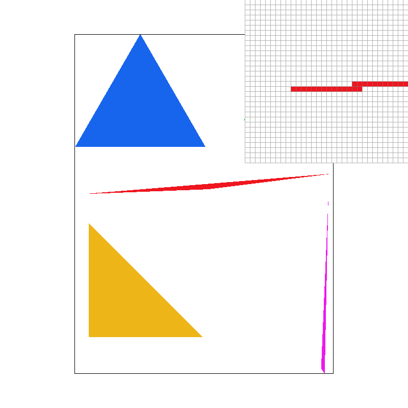
The inspector shows the thin red tip. Some pixels are red and others stay white because their centers miss the triangle. This makes the tip look broken and jagged with only one sample per pixel.
(d) Extra credit: faster rasterization and measured timings
For the faster version, I split the box into 8×8 groups of pixels. If a whole group is outside one of the triangle’s edges, I skip it. If it is completely inside all three edges, I can color its samples without testing them individually. Groups that cross an edge still need the usual checks.
I also avoid repeating some calculations. Moving one pixel right changes an edge value by a fixed amount, so I can add that amount instead of doing the whole cross product again. I calculate the regular sample offsets once per triangle. Pressing O switches between the basic and faster versions.
| Scene | Samples/pixel | Baseline ms | Tiled ms | Speedup |
|---|---|---|---|---|
| skinny | 1 | 43.502 | 2.387 | 18.22× |
| skinny | 16 | 558.751 | 11.932 | 46.83× |
| sun | 1 | 3.791 | 1.296 | 2.93× |
| sun | 16 | 39.908 | 8.921 | 4.47× |
| lion | 1 | 2.010 | 0.638 | 3.15× |
| lion | 16 | 22.713 | 3.941 | 5.76× |
I timed 11 draws after 3 warmup draws and used the median time. Both versions used the same scene, sample rate, and 800×800 image size. The timer surrounds SVG::draw, so these numbers measure drawing the SVG, not loading files, showing the image, or saving a PNG.
The skinny triangles improve the most because most of their bounding boxes are empty. The sun and lion also get faster, but not by as much.
Tested with a release build on macOS using Apple Clang. The saved results are in the timing summary.
Task 2 — Antialiasing by supersampling
(a) How supersampling works and what I changed
Instead of checking only the center of a pixel, supersampling checks several points inside it. For 4 samples I use a 2×2 grid; for 16 I use a 4×4 grid. Each point is placed in the center of its small square.
I test and color each point separately, then average the colors when the scene is finished. For example, if two of four samples are red and two are white, the final pixel is pink. This gives a better estimate of how much of the pixel the triangle covers.
I store the sample colors in sample_buffer, with all samples for one pixel next to each other. The buffer has width × height × sample rate entries. I resize it when the window size or sample rate changes, and clear it to white before drawing.
Triangles now write individual samples. Points and lines fill all samples of their pixel with the same color. At the end, resolve_to_framebuffer() averages each pixel’s samples and converts the result into the red, green, and blue bytes used for the output image.
(b) Comparison at 1, 4, and 16 samples per pixel
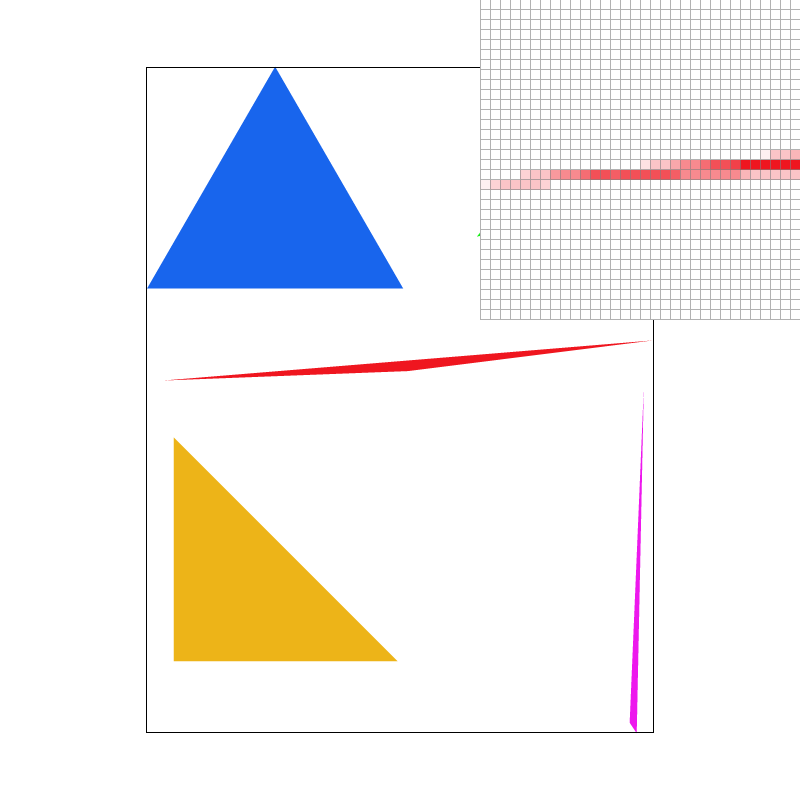
These use basic/test4.svg with the default view and the inspector in the same place. At 1 sample, the red tip has sharp jumps between red and white. At 4 samples, partly covered pixels become pink. At 16 samples, there are more possible shades, so the tip looks smoother. The triangle itself has not changed.
(c) Extra credit: jittered sampling compared with a regular grid
Pressing J moves each sample to a random-looking position inside its small grid square. This is called jittered sampling. I generate the positions from the pixel and sample numbers, so they stay the same on every redraw and every triangle uses the same points within a pixel.
The comparison scene has many thin diagonal stripes. With a regular grid, the spacing of the samples creates noticeable bands. Moving the samples breaks up the bands, but adds grainy noise. Using 16 samples reduces that noise compared with 4.
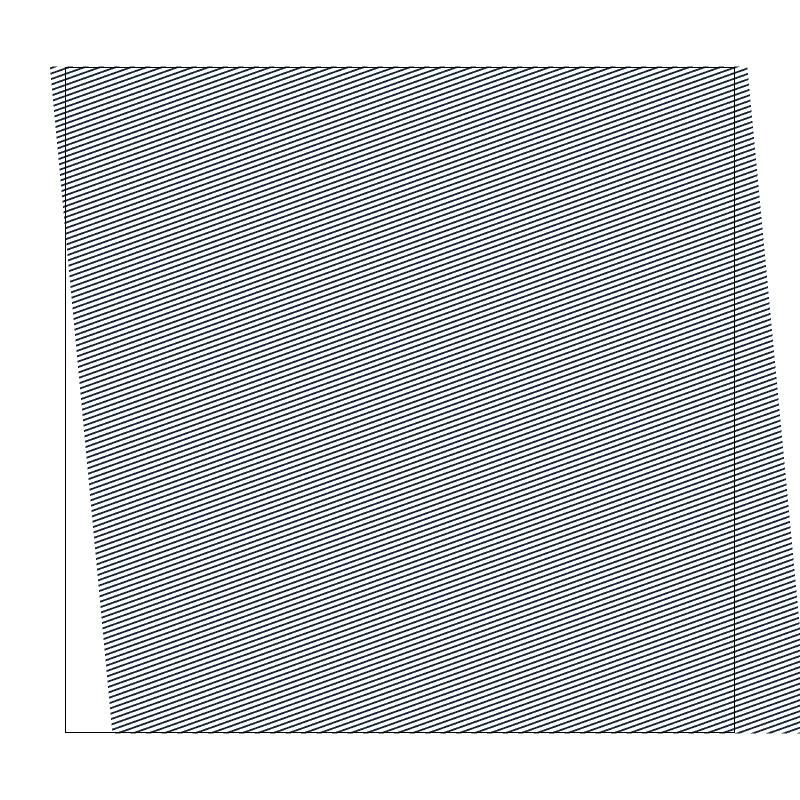
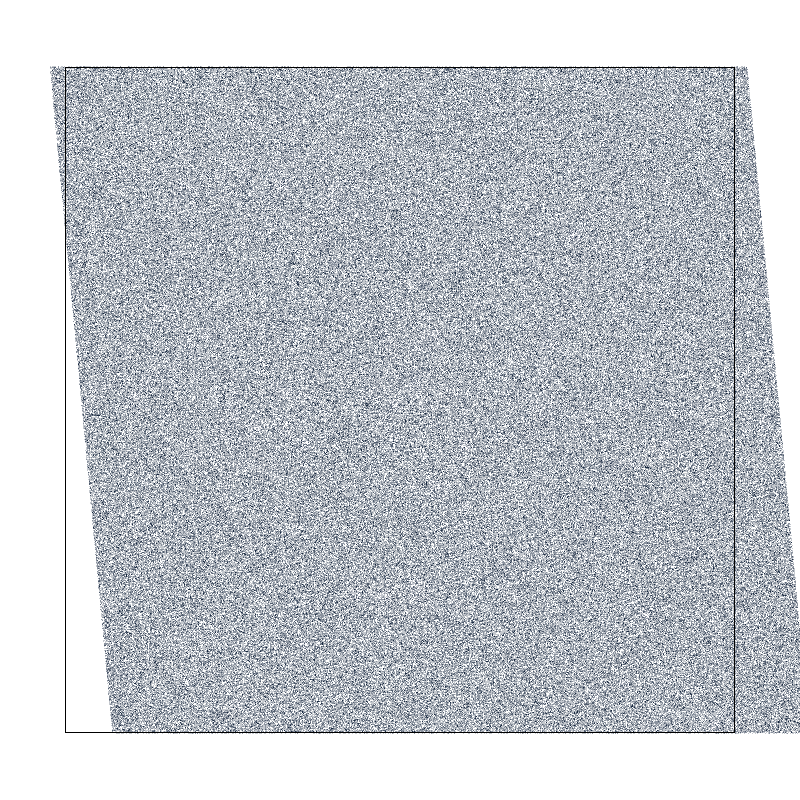
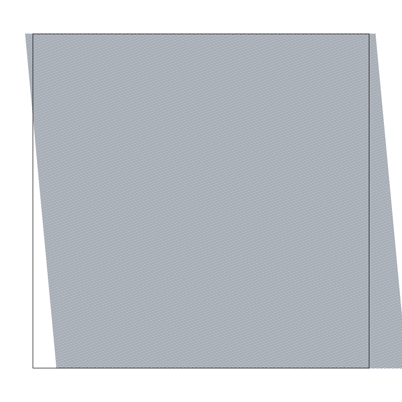
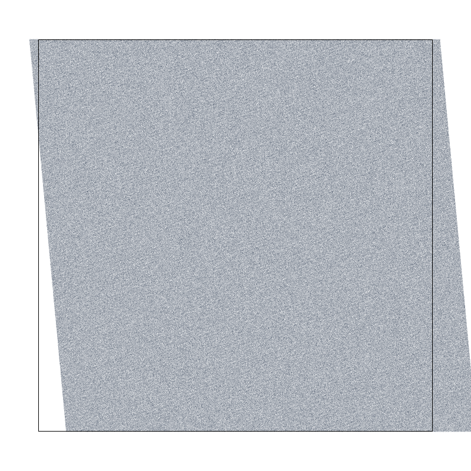
At 4 samples, the regular grid took 75.171 ms and jittered sampling took 218.602 ms. The extra position calculations make jitter slower. It helps this pattern, but it is not always better than the regular grid.
Task 3 — Transforms
(a) Custom cubeman: pose, colors, and transforms
I made my_robot.svg look like cubeman is waving. One arm is raised, the other reaches out, and the legs are bent. I used teal for the body and gold for the head, hands, and feet.

I put the body parts into nested SVG groups. Moving an arm group to the shoulder and rotating it also moves the forearm and hand. A smaller group at the elbow lets me bend just the lower arm. I used the same idea for the hips and knees.
The code uses 3×3 matrices for translation, scaling, and rotation. Translation moves a shape, scaling changes its size, and rotation turns it. The order matters: rotating a part around its own joint and then moving it into place is different from moving it first and rotating around the scene’s origin.
(b) Extra credit: rotating the view
I added [ and ] to rotate the view by −15° and +15°. Space resets it. The SVG points stay the same; the change is in how the whole drawing is placed on the screen.
The renderer first maps SVG coordinates into a square from 0 to 1 in both directions, called NDC, and then into screen pixels. I put the rotation between those two steps. I move the center, (0.5, 0.5), to the origin, rotate, and move it back.
· T(−0.5, −0.5) · SVG_to_NDC · point
The canvas border rotates with the drawing. I also account for the rotation when dragging the view, so it still follows the mouse. Positive angles look clockwise because screen y increases downward.
Task 4 — Barycentric coordinates
(a) What barycentric coordinates mean and how I use them
Barycentric coordinates are three weights that describe a point inside a triangle. Each weight belongs to one vertex, and the three add up to one. At a vertex, its weight is one and the other two are zero. Between vertices, the weights are shared.
I get the weights from the three edge-test results divided by the triangle’s signed double area. Then I blend the colors using C = αC₀ + βC₁ + γC₂. So a weight of 0.5 means that vertex supplies half of the final color.
In this example, the vertices are red, green, and blue. Near a corner, its color is strongest. On an edge, the color is a mix of its two ends. At the point halfway along a red-blue edge, the weights are 0.5 red, 0 green, and 0.5 blue, giving purple. At the triangle’s center of mass, all three weights are 1/3, giving gray.
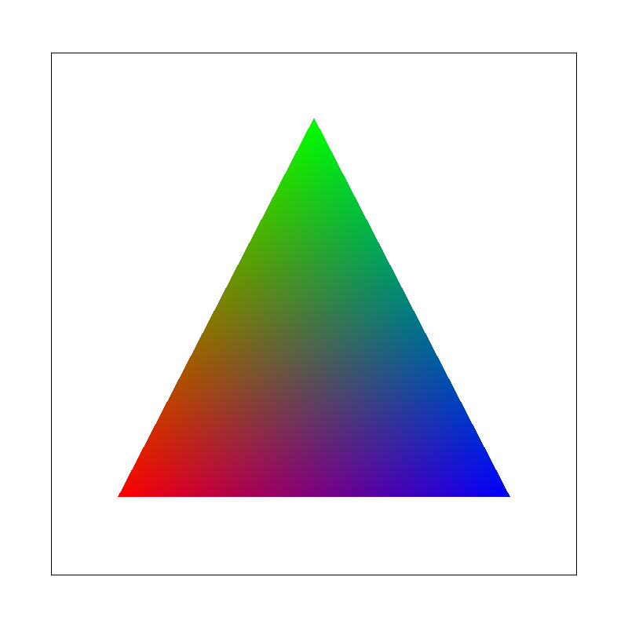
(b) Color-wheel result at one sample per pixel
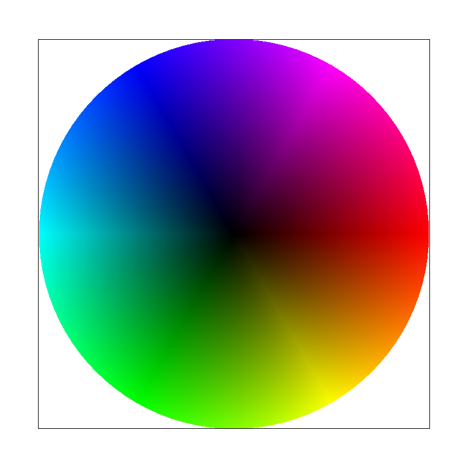
This is svg/basic/test7.svg at the default view and 1 sample per pixel. Blending the vertex colors creates smooth changes across the triangles that make up the wheel.
Task 5 — Pixel sampling for texture mapping
(a) Texture mapping, nearest sampling, and bilinear sampling
A texture is an image used to color a shape. Each vertex has texture coordinates, (u,v), which point to a place in that image. I blend these coordinates with the same barycentric weights used in task 4, then look up the color at the resulting location.
A pixel in a texture is called a texel. I convert u and v to image coordinates with x = u·(width−1) and y = v·(height−1). Nearest sampling rounds the location and uses the closest texel’s color.
Bilinear sampling blends the four surrounding texels based on how close the location is to each one. I blend the two colors in each row first, then blend the two row results. This makes changes between texels smoother. At the image edges, I keep the coordinates within the valid range.
(b) Comparing the four settings
All four images use svg/texmap/test6.svg, the original texture level, and the same view and inspector position. I changed only the pixel sampling method and sample count.
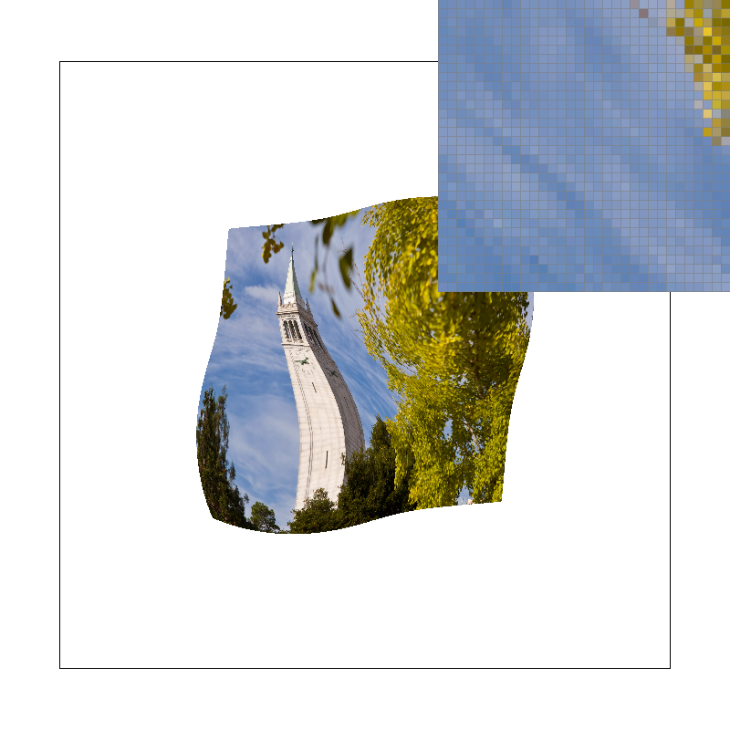
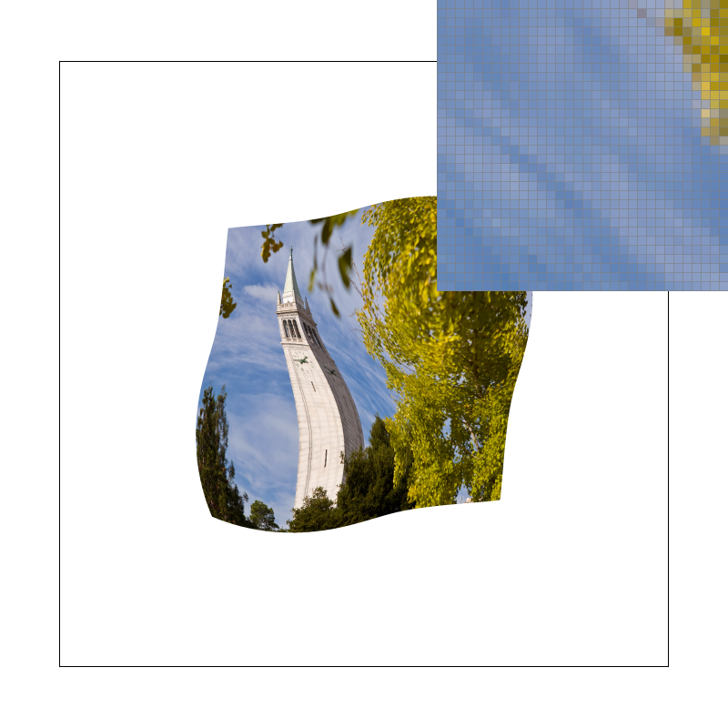
(c) What changes, and when the difference is largest
With 1 sample, nearest sampling gives sharper jumps between colors, while bilinear sampling smooths them out. With 16 samples, both look smoother because the pixel averages several texture colors. This also makes the difference between the two methods smaller.
The difference is biggest when a texture is enlarged and nearby texels have very different colors. Nearest sampling makes each texel look like a block; bilinear sampling blends between those blocks. If nearby colors are already similar, there is less difference. When a texture is drawn much smaller, blending only four texels is not enough to handle all the detail. That is why task 6 adds mipmaps.
Task 6 — Level sampling with mipmaps
(a) What level sampling does and how I implemented it
A mipmap is a set of smaller copies of a texture. Level 0 is the original image, and each next level is about half as wide and half as tall. The smaller copies average nearby colors. They help when the texture is drawn so small that many of its texels fit into one screen pixel.
To pick a level, I find the texture coordinates at the sample point, one screen pixel to its right, and one screen pixel below it. The differences tell me how quickly the texture coordinates change across the screen. I multiply by the texture width and height to express those changes in texels.
I take the larger of the two change lengths, L, and calculate λ = log₂(max(1,L)). For example, a change of about 4 texels per screen pixel gives level 2. I keep the result within the levels that exist. If the texture is enlarged, I use level 0.
L_ZERO always uses the original image. L_NEAREST rounds λ to the closest level. L_LINEAR blends between the two surrounding levels. For example, λ = 1.25 gives 75% of level 1 and 25% of level 2. Each level can still use nearest or bilinear pixel sampling. Blending two levels with bilinear sampling is called trilinear filtering.
(b) Speed, memory, and antialiasing tradeoffs
The three settings change different things: how many screen points I test, how I choose a color between texels, and which size of the texture image I use.
| Control | Speed | Memory | What it helps with |
|---|---|---|---|
| Samples per pixel | More samples mean more points to test and colors to average. | The sample buffer uses 12·width·height·S bytes. | Smooths edges and averages more texture colors. High rates take more time and memory. |
| Nearest → bilinear pixel sampling | Uses four texels instead of one, so each lookup does more work. | No extra texture images needed. | Smooths colors when an image is enlarged. It is not enough when many texels fit into one screen pixel. |
| Mipmap level sampling | Uses one level, or two when blending levels. | For a square power-of-two image, the smaller copies add about one-third more texture memory. | Reduces noise when an image is drawn small, but can blur detail in a direction that does not need it. |
For example, a 1024×1024 sample buffer takes 12 MiB with 1 sample per pixel and 192 MiB with 16. Mipmaps can reduce texture noise without using that many screen samples. But mipmaps alone do not smooth a triangle’s outside edge, so using both methods can still help.
(c) Four required combinations using an original PNG
I used a 1024×1024 test image with colored stripes and a grid, saved as frequency.png. In texture_study.svg, the same image is squeezed into four bands that get thinner from top to bottom. All four screenshots use 1 sample per pixel.


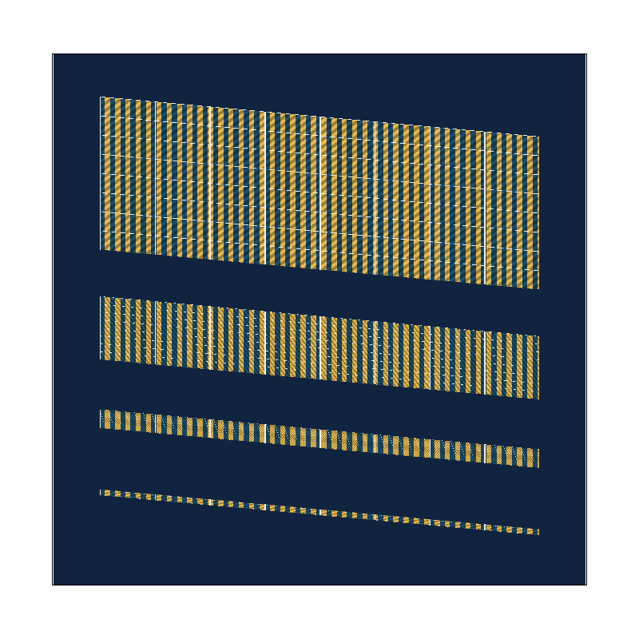
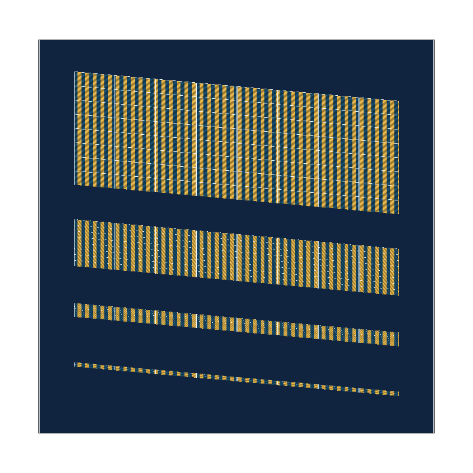
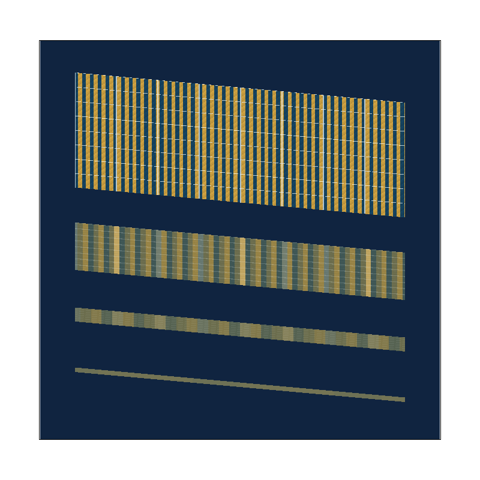
Using level 0 keeps the fine details, but they become uneven as the bands get thinner. Bilinear sampling smooths nearby colors, but does not remove all of this noise. Choosing a smaller mipmap level helps more. It also blurs the stripes across their width, even though most of the squeezing is in the other direction.
(d) Extra credit: anisotropic filtering
Anisotropic filtering helps when a texture is squeezed much more in one direction than the other. It chooses a mipmap level based on the less-squeezed direction, then averages several samples along the more-squeezed direction. This keeps more detail where the texture does not need as much blurring.
I use the changes in texture coordinates to find those two directions and their sizes. The code takes up to 16 evenly spaced samples along the longer direction and blends between mipmap levels at each point. If 16 samples are not enough for the amount of squeezing, it uses a blurrier mip level to keep the result from becoming noisy.
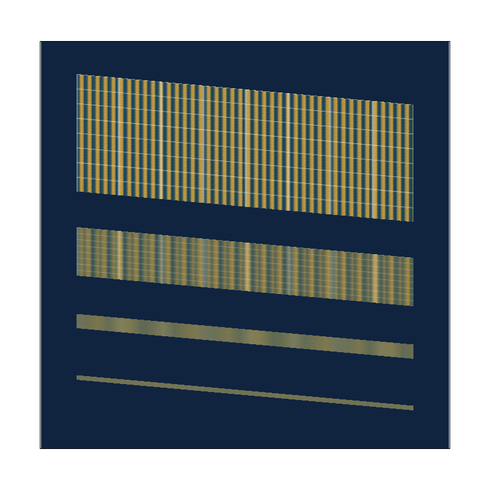
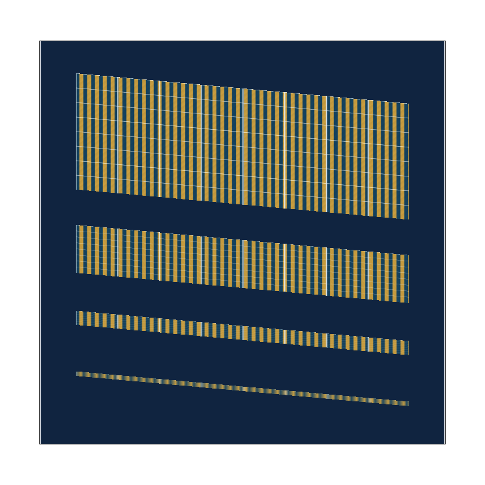
The nearest and bilinear results are shown in Figures 9a and 9b. Compared with trilinear filtering above, anisotropic filtering keeps the colored stripes clearer in the thin bands. The bottom band still loses some detail because the code limits the number of samples to 16.
| Filter | Median ms | Observed range ms |
|---|---|---|
| nearest | 1.513 | 1.491–1.542 |
| bilinear | 3.023 | 2.981–3.073 |
| trilinear | 9.068 | 8.954–9.211 |
| anisotropic | 32.555 | 32.317–33.281 |
These timings use the same method as task 1 and 1 sample per screen pixel. Anisotropic filtering takes longer because each texture lookup does more work. It uses the same mipmaps, so it does not need another set of texture images.